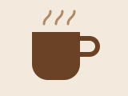

Fresh coffee, home-made cakes and a quiet place to sit. Open every day from 7 am.

Today's specials
- Flat white — £2.80
- Carrot cake — £3.20
- Soup of the day — £4.50
Our cafe is on the corner of Mill Road and Park Street, next to the library. There is bike parking outside and we are fully wheelchair accessible.
Order now